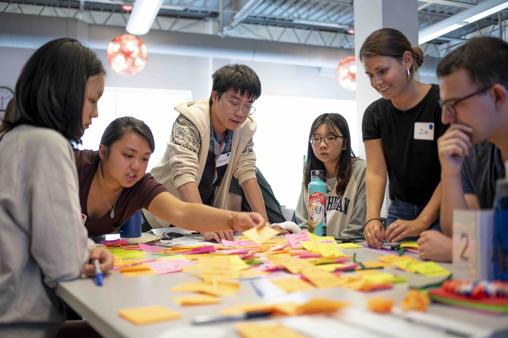
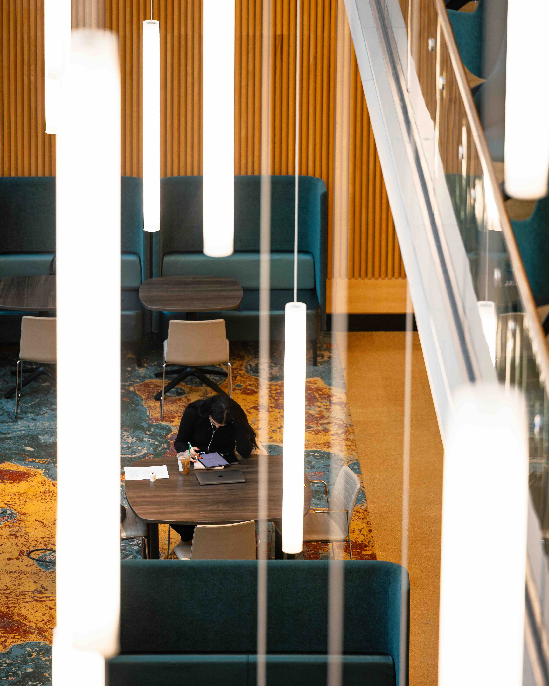

University Health & Counseling (UHC) supports the health and well-being of the campus community. We are inspired to help students realize their potential, cope with the stresses of life, work productively, and connect meaningfully with others.
UHC is made up of Counseling and Psychological Services (CAPS), which offers counseling services, and University Health Service (UHS), which offers medical services. This website is about CAPS. For information about UHS, please visit the UHS website.
CAPS is committed to creating an environment based on our values of multicultural, multi-disciplinary and multi-theoretical practices that allow our diverse student body to access care, receive high quality services and take positive pathways to mental health. We are happy to offer both in-person and virtual services.
Our Front Desk (Michigan Union 4th Floor) is open and ready to help support you -- staff members are available throughout the day to assist you with your needs to answer questions, and get you to the right place. We can be reached by phone at: (734) 764-8312.
CAPS has a limited number of private spaces available for students to connect with their counselor via telecounseling. Please contact the front desk for more information on those private spaces.
Please Note: During high-demand periods, CAPS will be unable to accommodate class-related interviews and/or projects. Many students are able to find the information they need within our website and our annual reports.
The CAPS office is unable to participate in scavenger hunts for students due to maintaining the confidentiality of our clients. However, you are welcome to direct students to the wellness zone, which has a separate entrance adjacent to CAPS. If you have any questions, please feel free to contact us.
Let's Talk
“Let's Talk” is a free program that supports students starting their mental health journeys. It provides casual meetings with counselors during specific drop-in times for initial support and advice.
Individual Peer Counseling
Individual Peer Counseling (IPC) is designed to offer a new way to meet the needs of students across the University of Michigan. We are here to support student mental health and offer students a place to vent.
Uwill Teletherapy Services
Uwill is an addition to CAPS services that provides students with video, phone, chat, and message sessions with licensed mental health professionals at no cost. This additional counseling option offers students greater flexibility and allows CAPS to expand its service capacity.
First Year Guide
U-M Counseling & Psychological Services (CAPS) welcomes all of our 1st year students including those who are living on campus and those who are located remotely. We are happy to launch a new resource created exclusively for you: “Go Blue! A New Student’s Guide to Surviving and Thriving at U-M: Mental Health Tips.”
A Brief Note of Support Regarding the Violence in Israel and Gaza
CAPS extends its support to all our students who are being impacted by the current violence in Israel and Gaza. We recognize the understandable grief, fear and anger that many of our students may be experiencing right now, especially our students who are Israeli, Palestinian, or have ties to or loved ones in those regions. We encourage all of you to take care of and be compassionate with yourselves and each other; it is in times like these, that we can come together as a community, and in fact, we need to.
Read moreSelf-Care For Incidents Of Campus Climate Concerns
When faced with social injustices and bias incidents, it is extremely difficult to cope and know what to do. Feeling overwhelmed with the current socio-political state, experiencing discrimination, or being impacted by contentious people or policies increases stress which remains correlated to negative mental health outcomes. During these times, it remains imperative that we take care of ourselves, take care of loved ones, and take care of our campus community. We all have the power to spread kindness, celebrate diversity and inclusion, and promote social justice.
Scope of Services
In support of the educational goals of the University and the Division of Student Life, Counseling and Psychological Services (CAPS) provides a range of clinical, preventative, and training services consistent with the practices and standards of a nationally accredited university counseling center. CAPS is committed to creating a safe and supportive environment based on our multicultural, multi-disciplinary and multi-theoretical values and practices that allow our diverse student body to access care, to receive high quality services, and to take positive pathways to mental health.
Togetherall
Recognizing that some students who are feeling isolated, depressed, or anxious may find it challenging to connect with our resources and verbally express their needs, Counseling and Psychological Services (CAPS) is pleased to announce the piloting of Togetherall, an online, anonymous peer-support tool available for free to our students. Togetherall is a clinically moderated, online peer-to-peer mental health community that reaches and empowers a diverse population of students to anonymously seek and provide support
Sexualized Violence
Sexual violence does not discriminate. Both survivors and perpetrators come from all genders, cultures, races, ethnicities, sexual orientations, socio-economic status, and religions. Sexual violence is defined as any unwanted sexual contact or interaction and can include:
Support For Students Impacted By Campus Climate Concerns
As an agency, Counseling and Psychological Services (CAPS) remains committed to the celebration and promotion of diversity in all its forms. We condemn oppression in every form and work to provide a safe, welcoming and affirming environment for all persons. Creating and sustaining a welcoming campus climate requires mutual respect for all. And that means discrimination and harassment are not acceptable at the University of Michigan. At CAPS, we remain committed to affirming inclusivity, value, and belonging of all students.